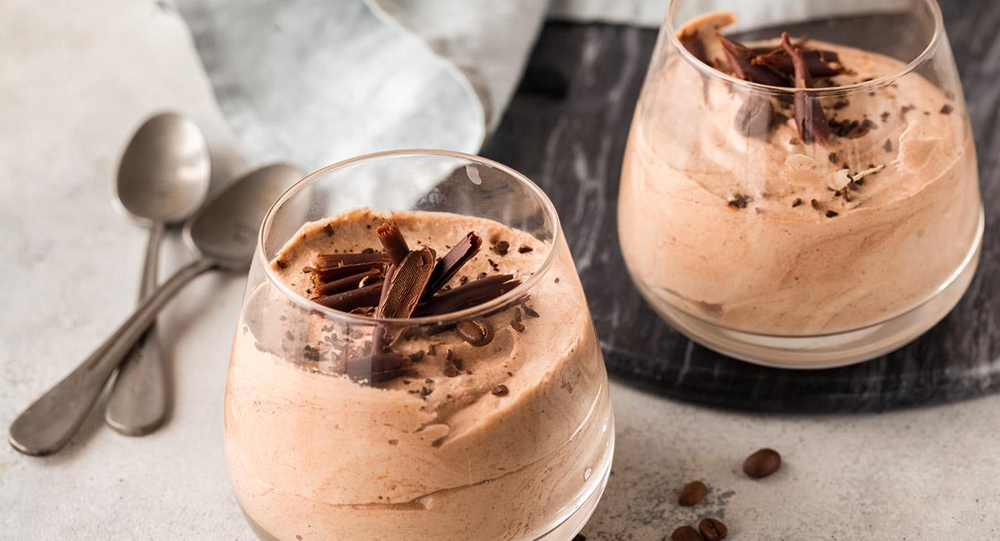

Mousse de café
Un postre elegante, cremoso y lleno de aroma, ideal para los amantes del café. Su textura suave y aireada lo
convierte en una opción perfecta para cerrar una comida con un toque sofisticado, sin ser demasiado pesado.
La combinación entre la intensidad del café y la suavidad de la crema ofrece un equilibrio delicioso que
conquista desde el primer bocado.

Ingredientes
- 200 ml de crema para batir (nata para montar bien fría)
- 2 huevos frescos (separando claras y yemas)
- 80 g de azúcar (aproximadamente 4 cucharadas)
- 2 cucharadas de café soluble o espresso fuerte (frío)
- 1 cucharadita de esencia de vainilla
- Una pizca de sal
- Opcional: virutas de chocolate o cacao en polvo para decorar
Proceso
- Preparar la base de café:
Disuelve el café soluble en un par de cucharadas de agua caliente, o prepara un espresso concentrado.
Déjalo enfriar para que no afecte la consistencia de la mezcla.
- Batir las yemas:
En un bol, bate las yemas con la mitad del azúcar hasta obtener una mezcla cremosa y pálida. Añade el
café frío y la vainilla, integrando bien los sabores.
- Montar la crema:
En otro recipiente, bate la crema fría hasta que forme picos suaves. Incorpórala poco a poco a la mezcla
de café y yemas, con movimientos envolventes para mantener la textura aireada.
- Montar las claras:
Bate las claras con una pizca de sal. Cuando estén espumosas, agrega el resto del azúcar y sigue
batiendo hasta lograr un merengue brillante y firme.
- Unir todo:
Añade el merengue poco a poco a la mezcla anterior, siempre con movimientos suaves y envolventes, para
evitar que la mousse pierda ligereza.
- Reposar y servir:
Reparte la mezcla en copas individuales y refrigera al menos 2 horas, hasta que la mousse esté bien
firme y fresca.
Obtendrás una mousse cremosa, ligera y llena de aroma, con un delicado sabor a café que resalta sin ser
abrumador. La combinación de texturas —la suavidad de la crema y la ligereza del merengue— crea un postre
elegante y equilibrado, ideal para consentirse o sorprender en una cena especial. Decorada con virutas de
chocolate o un toque de cacao, luce aún más irresistible.